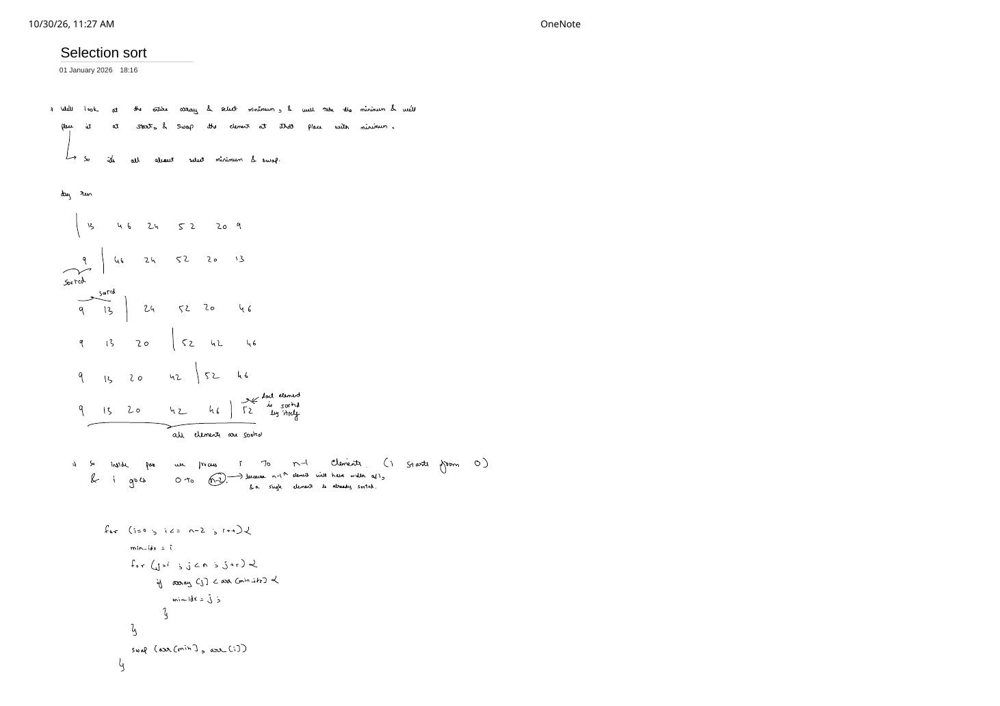
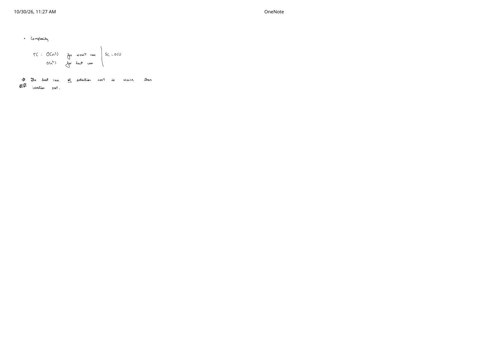
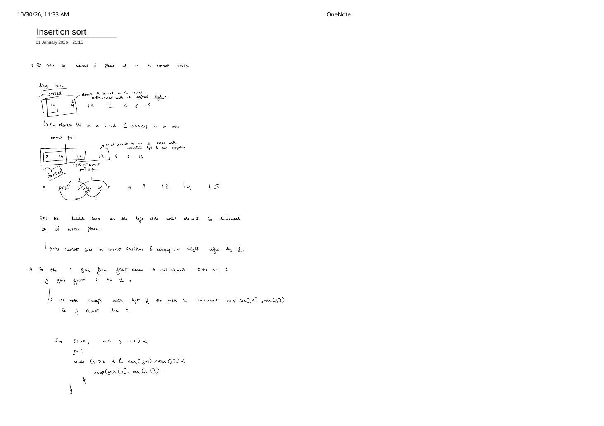
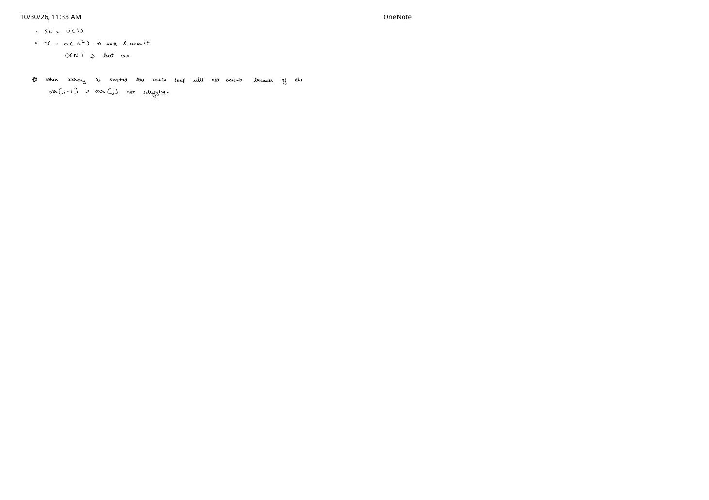

Elementary Sorts: Bubble, Selection & Insertion Sort
Expanded from handwritten competitive coding study notes (01_Bubble_sort.pdf, 02_Selection_sort.pdf, 03_Insertion_sort.pdf)
Although Bubble Sort, Selection Sort, and Insertion Sort share an $O(n^2)$ worst-case comparison bound, their loop invariants, memory write counts, stability, and best-case behaviors on sorted inputs are completely different. Let's walk through all three directly from the handwritten traces.
1. Bubble Sort: Push the Maximum Right via Adjacent Swaps
Bubble Sort repeatedly sweeps left-to-right across the unsorted prefix, comparing adjacent pairs (arr[j], arr[j + 1]) and swapping whenever arr[j] > arr[j + 1]. At the end of each pass, the largest remaining element has "bubbled" all the way to the right boundary of the unsorted prefix.
Handwritten Dry Run on [13, 46, 24, 52, 20, 9] (01_Bubble_sort.pdf, Page 1)
Inside Pass 1 ($i = 5$, scanning $j = 0 \dots 4$):
- $j = 0$: compare $(13, 46)$ — already sorted $\to$
[13, 46, 24, 52, 20, 9] - $j = 1$: compare $(46, 24)$ — not sorted, swap $\to$
[13, 24, 46, 52, 20, 9] - $j = 2$: compare $(46, 52)$ — already sorted $\to$
[13, 24, 46, 52, 20, 9] - $j = 3$: compare $(52, 20)$ — not sorted, swap $\to$
[13, 24, 46, 20, 52, 9] - $j = 4$: compare $(52, 9)$ — not sorted, swap $\to$
[13, 24, 46, 20, 9 | 52](maximum52locked at index $5$!)
End-of-pass snapshots across all passes (vertical bar | marks the growing sorted suffix):
- After Pass 1 ($i = 5$):
13, 24, 46, 20, 9 | 52 - After Pass 2 ($i = 4$):
13, 24, 20, 9 | 46, 52 - After Pass 3 ($i = 3$):
13, 20, 9 | 24, 46, 52 - After Pass 4 ($i = 2$):
13, 9 | 20, 24, 46, 52 - After Pass 5 ($i = 1$):
9 | 13, 20, 24, 46, 52$\implies$ fully sorted!
Loop Bounds (Why j <= i - 1?) & Early-Exit Best-Case Optimization
Page 2 highlights two key implementation details:
- Why
jruns from0toi - 1(and noti): Because the inner comparison accessesarr[j + 1]! On Pass 1 ($i = n - 1$), if $j$ reached $n - 1$,arr[j + 1]would read out-of-bounds atarr[n]. Stopping at $j = i - 1$ safely compares(arr[i - 1], arr[i]), covering index $i$. - Optimizing Best Case from $\Theta(n^2)$ to $O(n)$: Unmodified Bubble Sort executes $\sum_{i=1}^{n-1} i = \frac{n(n-1)}{2}$ comparisons even on an already sorted array. Introducing a boolean
swappedflag per pass lets usbreakimmediately as soon as a full pass performs zero swaps—meaning every adjacent pair already satisfiedarr[j] <= arr[j + 1]!
#include <utility>
#include <vector>
void bubbleSort(std::vector<int>& arr) {
int n = static_cast<int>(arr.size());
for (int i = n - 1; i >= 1; --i) {
bool swapped = false;
for (int j = 0; j <= i - 1; ++j) {
if (arr[j] > arr[j + 1]) { // Strict '>' preserves stability for equal elements!
std::swap(arr[j], arr[j + 1]);
swapped = true;
}
}
if (!swapped) {
break; // Array is completely sorted; exit early (O(n) best case!)
}
}
}2. Selection Sort: Select Minimum & Swap to Front
Selection Sort maintains a growing sorted prefix [0..i-1]. In pass $i$, it scans the entire unsorted suffix [i..n-1] to find the index min_idx of the smallest element, then swaps arr[i] with arr[min_idx].
Handwritten Dry Run on [13, 46, 24, 52, 20, 9] (02_Selection_sort.pdf, Page 1)
- Start:
| 13, 46, 24, 52, 20, 9 - $i = 0$: min of
[13, 46, 24, 52, 20, 9]is9(idx $5$); swap with13$\to$9 | 46, 24, 52, 20, 13 - $i = 1$: min of
[46, 24, 52, 20, 13]is13(idx $5$); swap with46$\to$9, 13 | 24, 52, 20, 46 - $i = 2$: min of
[24, 52, 20, 46]is20(idx $4$); swap with24$\to$9, 13, 20 | 52, 24, 46 - $i = 3$: min of
[52, 24, 46]is24(idx $4$); swap with52$\to$9, 13, 20, 24 | 52, 46 - $i = 4$: min of
[52, 46]is46(idx $5$); swap with52$\to$9, 13, 20, 24, 46 | 52
(Note: on Page 1 of the handwritten scan, 24 was momentarily written as 42 in pass 3—either way, once $i$ reaches $n - 2$, the final single element at $n - 1$ is automatically the maximum and sorted by itself!)
Two Critical Caveats of Selection Sort (Page 2)
- Best case is STILL $\Theta(n^2)$ (worse than Insertion Sort!): Even if the array is already sorted, pass $i$ cannot know
arr[i]is the minimum without scanning all remaining elements $j = i + 1 \dots n - 1$, always performing $\frac{n(n-1)}{2}$ comparisons. - Not stable: Long-distance swaps jump equal keys past each other! On
[4a, 4b, 1], pass $i = 0$ swaps4awith1, producing[1, 4b, 4a]and inverting4aand4b. (Its lone advantage: at most $n - 1$ writes to memory!)
void selectionSort(std::vector<int>& arr) {
int n = static_cast<int>(arr.size());
// Outer loop stops at n - 2 because a 1-element suffix [n-1] is trivially sorted
for (int i = 0; i <= n - 2; ++i) {
int min_idx = i;
for (int j = i + 1; j < n; ++j) {
if (arr[j] < arr[min_idx]) {
min_idx = j;
}
}
std::swap(arr[min_idx], arr[i]);
}
}3. Insertion Sort: Deliver Each Element Into Its Sorted Prefix
Like sorting a hand of playing cards one card at a time, Insertion Sort maintains the invariant that arr[0..i-1] is already in sorted order, then walks arr[i] leftward until it reaches its rightful slot—right-shifting larger elements by $1$.
Handwritten Dry Run on [14, 9, 15, 12, 6, 8, 13] (03_Insertion_sort.pdf, Page 1)
- $i = 0$ (
14): Size-$1$ prefix[14]is trivially sorted. - $i = 1$ (
9): $14 > 9 \implies$ swap left $\to$[9, 14 | 15, 12, 6, 8, 13]. - $i = 2$ (
15): $14 \not> 15 \implies$ innerwhileloop runs $0$ times! $\to$[9, 14, 15 | 12, 6, 8, 13]. - $i = 3$ (
12): swap left past15, then past14, stop at $9 < 12$ $\to$[9, 12, 14, 15 | 6, 8, 13]. - $i = 4$ (
6): walks all the way to index $0$ $\to$[6, 9, 12, 14, 15 | 8, 13]. - $i = 5$ (
8): stops right after6$\to$[6, 8, 9, 12, 14, 15 | 13]. - $i = 6$ (
13): walks past15and14, stops after12$\to$[6, 8, 9, 12, 13, 14, 15].
Why j > 0 & Swap vs. Shift Implementation
In the handwritten code on Page 1, j starts at i and compares arr[j - 1] > arr[j]—so the guard j > 0 is mandatory to prevent reading arr[-1]! On an already sorted array (Page 2), arr[j - 1] > arr[j] is immediately False for every $i$, so the inner while loop executes $0$ times in total, giving natural $O(n)$ best-case time without needing any auxiliary flag!
// 1. Handwritten adjacent-swap style (clear & concise)
void insertionSortSwaps(std::vector<int>& arr) {
int n = static_cast<int>(arr.size());
for (int i = 0; i < n; ++i) {
int j = i;
while (j > 0 && arr[j - 1] > arr[j]) { // Strict '>' keeps equal keys stable!
std::swap(arr[j - 1], arr[j]);
--j;
}
}
}
// 2. Production shift-only variant (cuts inner-loop array assignments by 3x)
void insertionSortShifts(std::vector<int>& arr) {
int n = static_cast<int>(arr.size());
for (int i = 1; i < n; ++i) {
int key = arr[i];
int j = i - 1;
while (j >= 0 && arr[j] > key) {
arr[j + 1] = arr[j]; // Right-shift by 1 instead of 3-way swap
--j;
}
arr[j + 1] = key;
}
}From the Handwritten Notes
Expand the original handwritten pages below to inspect the exact derivations, dry runs, and annotations:
View original note — Bubble Sort Page 1: Adjacent Swap Dry Run on [13, 46, 24, 52, 20, 9]

01_Bubble_sort.pdf: bubbling 52 to the end in Pass 1 and shrinking pass ranges $n-1, n-2, \dots, 1$.View original note — Bubble Sort Page 2: Why i - 1 & Early-Exit swapped_flag Optimization

01_Bubble_sort.pdf: out-of-bounds prevention with j <= i - 1 and breaking early on sorted inputs.View original note — Selection Sort Page 1: Select Minimum & Swap Dry Run


02_Selection_sort.pdf: prefix selection trace and why the outer loop ends at n - 2.View original note — Selection Sort Page 2: Why Best Case Remains O(n^2)


02_Selection_sort.pdf: worst and best case $\Theta(n^2)$ comparison against Insertion Sort.View original note — Insertion Sort Page 1: Prefix Insertion Trace on [14, 9, 15, 12, 6, 8, 13]


03_Insertion_sort.pdf: leftward delivery of 12 into [9, 14, 15] and j > 0 boundary guard.View original note — Insertion Sort Page 2: Natural O(n) Best-Case Complexity


03_Insertion_sort.pdf: why while (arr[j - 1] > arr[j]) never executes on an already sorted array.